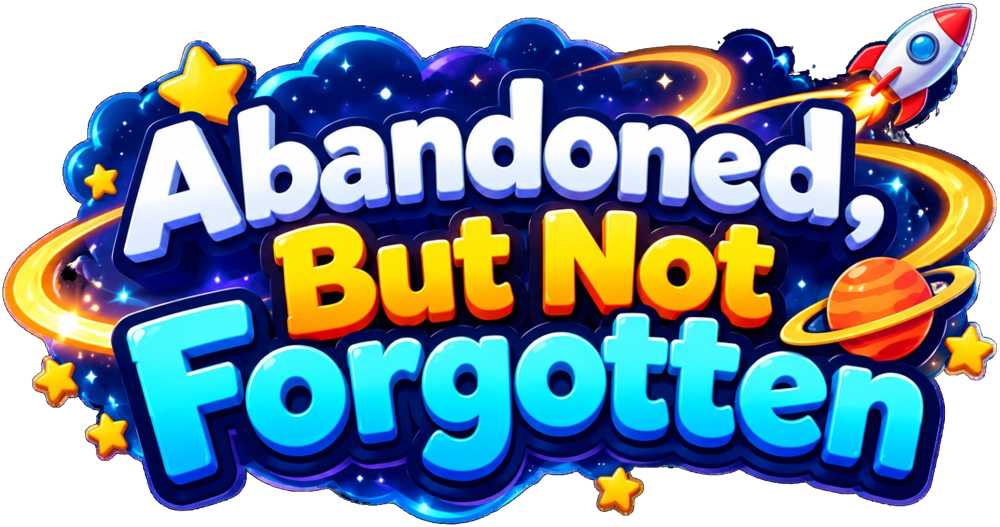

“Meet the machines we left behind.”

“Meet the machines we left behind.”
Abandoned but not Forgotten
NASA Space Apps 2026 · Data: NASA/JPL (Surveyor program) and NASA/JSC (Apollo 12) · Moon globe: stylized illustration, not real NASA imagery · Open source, Apache-2.0